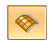
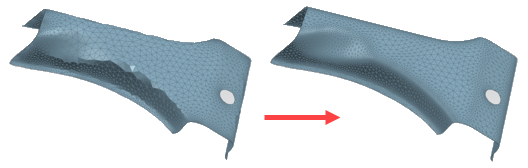
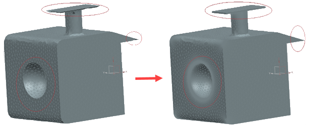
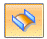
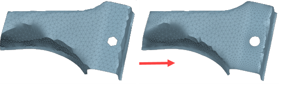

Remesh command
Use the Reverse Engineering tab→Cleanup Mesh Group→Remesh command to improve the overall quality of a meshed body by remeshing the mesh to a specified uniform size. You can remesh an entire body or fence select a portion of the body. You can also undo and redo the remesh if you need different results.
The command is useful when working with meshes created from models where the mesh size is not uniform across the model. It is also useful when working with scanned models where you want to increase or decrease the mesh density and size.
After setting the appropriate options, select a mesh body or mesh facets to remesh,
and then click Accept  to remesh the body or facets.
to remesh the body or facets.
The Remesh command bar contains the following options.
- Mesh Selection
-
- Body/Face
-
The Body/Face method selects bodies or faces to delete.

- Brush
-
The Brush method paints the area to be deleted. Highlighted mesh regions turn green when selected. This method is useful when selecting mesh facets in a small irregular area.

- Fence
-
The Fence method defines a selection box (rectangle by 2 points) that identifies the area to be deleted. The current view orientation determines the perspective of the selection box. Highlighted mesh regions turn green when selected.

- Box
-
The Box method defines a 3D selection box with a finite depth that identifies the area to be deleted.

- Curvature Refinement

-
Creates smaller facets at high curvature areas to maintain the shape.

- Retain Sharp edges

When selected, retains the sharp edges.
Note:If Curvature Refinement and Retain Sharp edges are both disabled, there is no mesh refinement and the command creates the same size mesh facets across the selected bodies or regions. However, the curvature areas and sharp edges may not be retained if the mesh size is so large that it cannot fit these areas and edges within the mesh boundary.
- Retain boundary


When selected, retains the boundaries of the selected mesh body or regions.
- Target Size
-
Specifies the desired facet edge length when no mesh refinement is defined.
- Minimum Size
-
Specifies the lower limit of the facet edge lengths on the mesh. Decease the minimum size for more refinement in areas where the mesher attempts to capture complex features.
- Chordal Tolerance
-
Specifies the maximum chordal deviation for areas with high curvature. Decreasing the value produces a more detailed mesh on a curvature area.
- Advanced Options
-
Displays the Remesh Options dialog box.
- Accept
-
Accepts the current remesh settings.
- Deselect

-
Deselects the current remesh settings.
How do I
Create a sketch from a section curveLearn more
Reverse Engineering workflowReverse engineering example
Look up more details
Delete Mesh commandFill Holes command
Smooth Mesh command
Align command
Align command bar
Remesh Options dialog box
Automatic regions command
Manual regions command
Extract surfaces command
Fit surfaces command
Deviation Analysis command
Deviation Analysis command bar
Deviation Analysis Settings dialog box
Section Sketches command
Section Sketches command bar
Section Sketches Options dialog box
Related Topics
Align a mesh body to a coordinate systemAnalyze the deviation between two objects